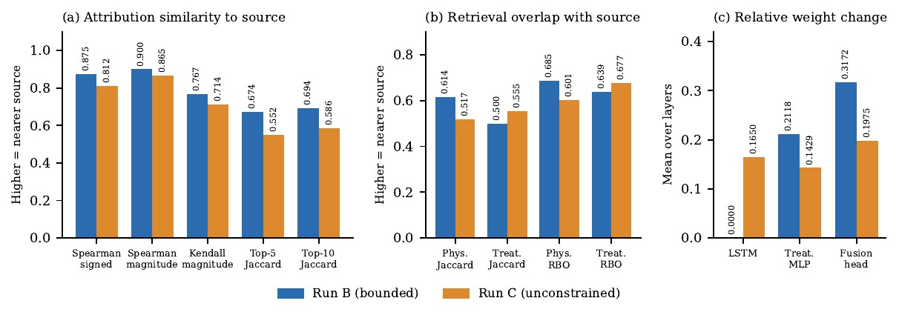

The question
When a clinical model is updated, clinicians who learned to trust its explanations need to know whether those explanations still mean the same thing. A common safeguard is a bounded update: freeze part of the model and retrain the rest. Does freezing actually keep the explanations stable, or does the change just move somewhere else?
Setup
- A two-stream ICU model: an LSTM encoder over physiology, an MLP over treatment context, and a fusion head. Trained on MIMIC-IV 2008–2013.
- Drift is detected in 2020–2022, and the model is adapted two ways: Run B leaves the physiology encoder out of the optimiser; Run C lets every layer update.
- Both are compared to the source model on Integrated Gradients attributions, and on PubMed abstracts retrieved using each patient's top attributed features.
Results

- Attributions stay closer under the bounded update on every measure, for example Spearman correlation 0.875 vs 0.812 and top-5 feature overlap 0.674 vs 0.552.
- Retrieval is mixed: physiology-side retrieval stays closer to the source under B (Jaccard 0.614 vs 0.517), but treatment-side retrieval stays closer under C (0.500 vs 0.555).
- The change relocates. With the encoder frozen, its weights do not move at all, while the treatment stream and fusion head change more than in the full update (0.212 vs 0.143 and 0.317 vs 0.198).
So freezing protects the part you freeze, but the adaptation pressure moves into the trainable parts, and explanations tied to those parts can shift more, not less.
Robustness checks
The repository includes a five-seed replication, a seed-to-seed noise floor for the attribution measures, a broader 2009–2019 PubMed corpus (3,668 abstracts) for the retrieval check, faithfulness checks on the attributions, and patient-specific grounding of the retrieved evidence. No patient-level data is published.